Requirements-Builder: 3 Documents in a Row
What this proves
The portal first-run requirements-builder flow was driven end-to-end by a headless browser against production, three times in a row, for three different projects — each on a fresh demo enrollment in genuine first-run state (needs_requirements, no project). Every run: typed the idea, generated and answered the AI questions, generated the full requirements document, saved it, and confirmed the home page flipped from the builder to the dashboard. Persistence was re-checked via the onboarding-state API after each save.
It did not work on the first attempt. Two blocking backend bugs were found and fixed (below) before the three consecutive runs succeeded.
What broke and what was fixed (Build → Break → Harden)
| What broke | POST /api/portal/project/requirements/generate started a job that immediately failed with "No project found for this enrollment". The review screen never appeared. |
| Root cause | startRequirementsGeneration() looked up the enrollment's Project and threw if none existed. But the first-run flow only creates the project at Save — which happens AFTER generation. So no genuine first-run user could ever generate a document. The documented walkthrough described a flow that did not actually complete end-to-end on production. |
| The fix | Create the project idempotently at the start of generation via createProjectForEnrollment() (findOrCreate on enrollment_id). The later Save calls the same helper and finds the same row — no duplicate project is created. |
| Where | backend/src/services/requirementsGenerationService.ts · commit c53a105b |
| What broke | Even once generation completed, the review screen would render an empty document (0 words) and Save would persist empty content. |
| Root cause | The polling endpoint GET /requirements/job/:id returns getJobStatus(), which omitted the document entirely. The frontend reads result.content on completion, so it always resolved to "". The generated text was persisted on the job row (output_document) but never returned by the read path. |
| The fix | getJobStatus() now returns result: { content: output_document } (and a top-level output_document). The review screen now renders the real document with its word count. |
| Where | backend/src/services/requirementsGenerationService.ts · commit c53a105b |
Both fixes shipped in commit c53a105b, deployed to the production backend, after which the three consecutive runs below all passed with zero console errors.
Final timings
| Run | Account | Result | Total | Budget | Console errors | Persisted stage |
|---|---|---|---|---|---|---|
| Run 1 LeadFlow CRM |
ali+demo-run1@colaberry.com | PASS | 2.61 min | within 30 min | 0 | has_requirements |
| Run 2 ShelfSense Inventory |
ali+demo-run2@colaberry.com | PASS | 1.68 min | within 30 min | 0 | has_requirements |
| Run 3 CareBridge Intake |
ali+demo-run3@colaberry.com | PASS | 1.9 min | within 30 min | 0 | has_requirements |
The two LLM calls dominate every run: question generation (~23–37s) and document generation (~70–112s). All client/auth/save/verify steps are sub-3s. The 30-minute budget is never remotely approached — actual totals are 1.7–2.6 minutes.
Step-by-step timing + screenshots (follow the whole process)
Run 1 — LeadFlow CRM PASS · 2.61 min
Idea: LeadFlow CRM · enrollment b57da7f7-0dd6-4dc8-bbb2-22095303ca9d · persisted stage has_requirements
| Step | Duration | Relative | OK |
|---|---|---|---|
| Authenticate (magic-link → JWT) | 0.6s | ✓ | |
| Pre-check: first-run state | 0.2s | ✓ | |
| Load /portal/home (builder embedded) | 1.0s | ✓ | |
| Type the idea | 0.0s | ✓ | |
| Generate questions (LLM) | 36.8s | ✓ | |
| Answer all questions | 1.2s | ✓ | |
| Click "Generate My Requirements" | 0.1s | ✓ | |
| Generate document (LLM, polled) | 111.8s | ✓ | |
| Save & Continue Setup | 0.3s | ✓ | |
| Verify persistence (API) | 0.2s | ✓ | |
| Home flips to dashboard | 2.8s | ✓ |

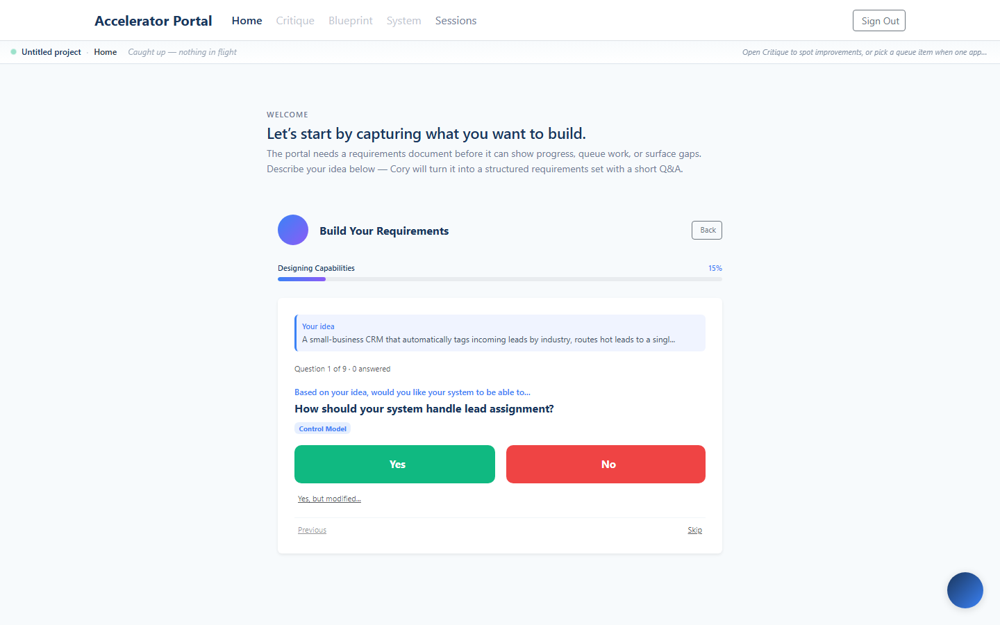
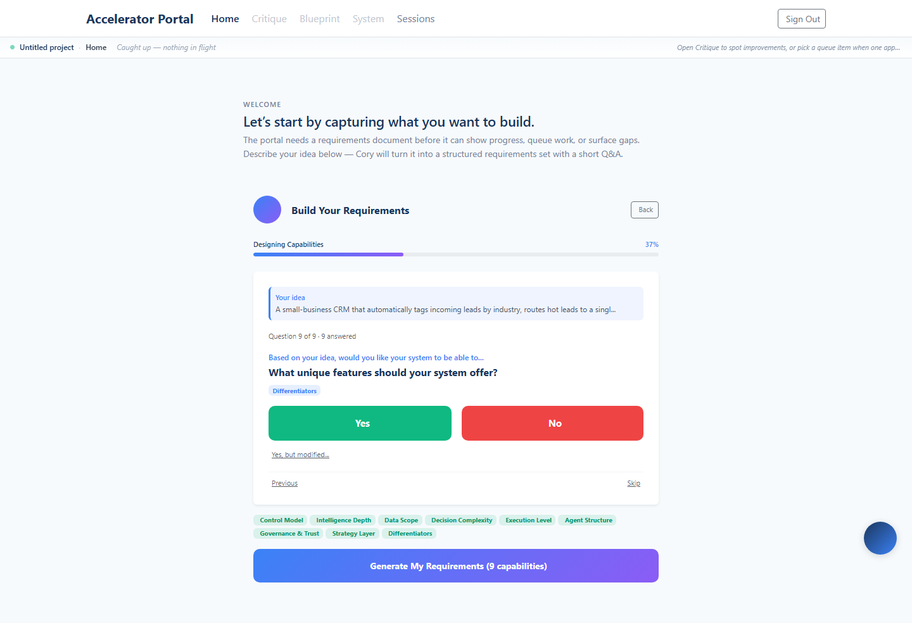
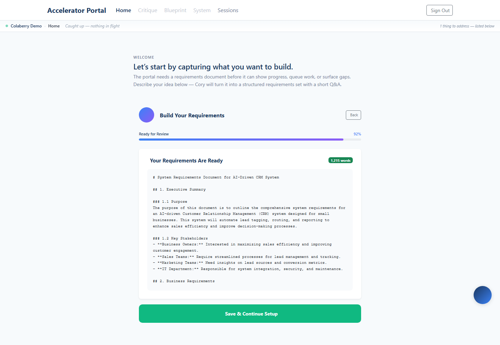
Run 2 — ShelfSense Inventory PASS · 1.68 min
Idea: ShelfSense Inventory · enrollment e2ad9c4b-0bd6-4eb9-a0d5-b0f1d8f78603 · persisted stage has_requirements
| Step | Duration | Relative | OK |
|---|---|---|---|
| Authenticate (magic-link → JWT) | 0.2s | ✓ | |
| Pre-check: first-run state | 0.2s | ✓ | |
| Load /portal/home (builder embedded) | 1.2s | ✓ | |
| Type the idea | 0.0s | ✓ | |
| Generate questions (LLM) | 23.3s | ✓ | |
| Answer all questions | 1.2s | ✓ | |
| Click "Generate My Requirements" | 0.1s | ✓ | |
| Generate document (LLM, polled) | 69.5s | ✓ | |
| Save & Continue Setup | 0.3s | ✓ | |
| Verify persistence (API) | 0.2s | ✓ | |
| Home flips to dashboard | 2.8s | ✓ |
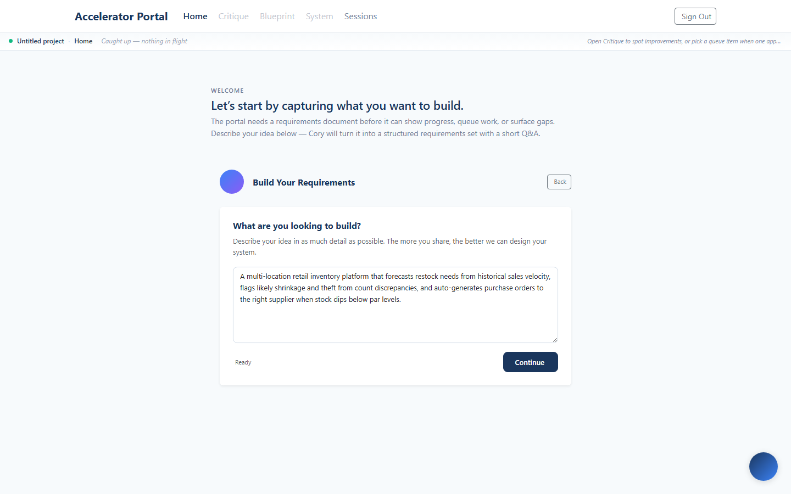
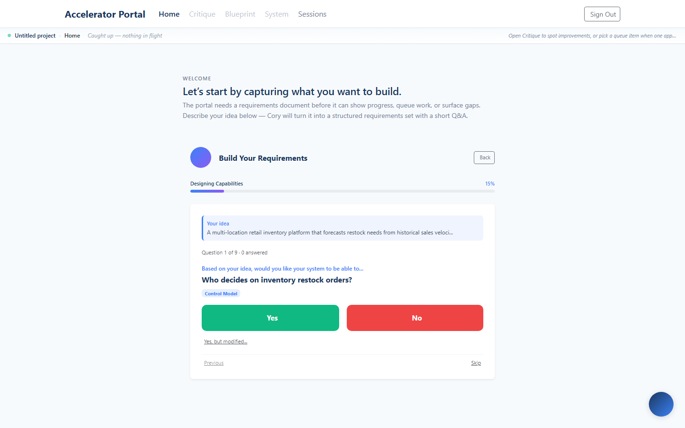
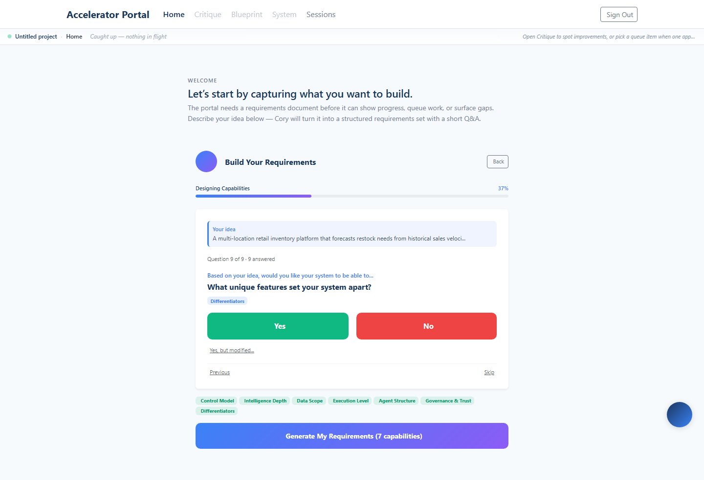
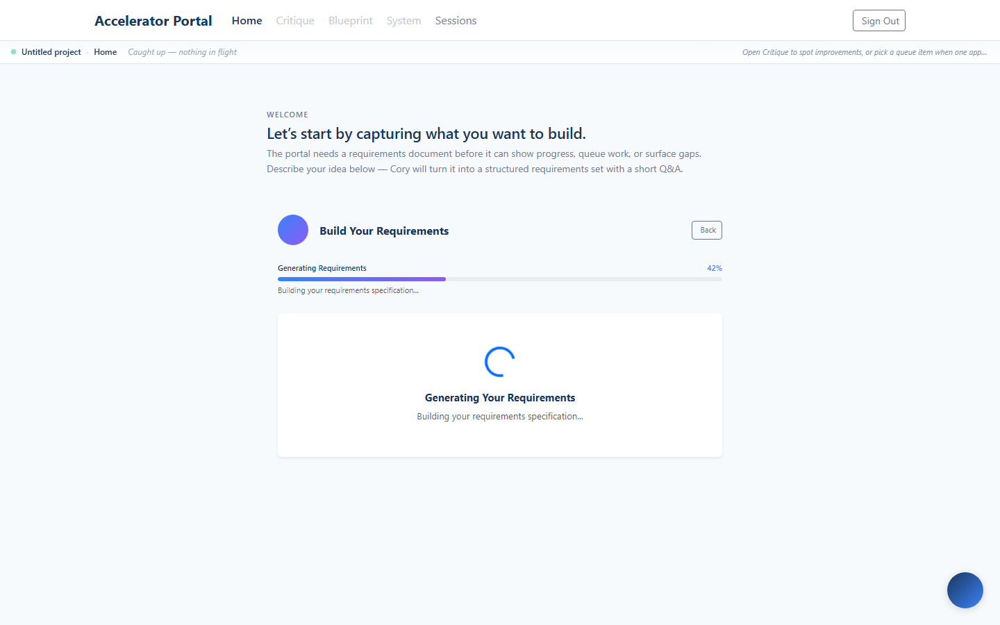
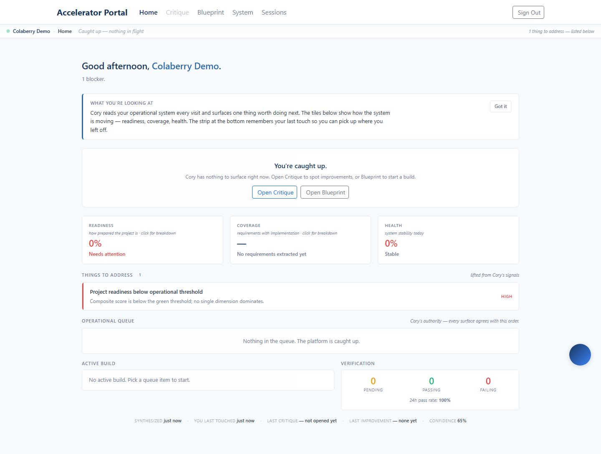
Run 3 — CareBridge Intake PASS · 1.9 min
Idea: CareBridge Intake · enrollment dadc3262-32fc-465e-9612-996e469cf5e7 · persisted stage has_requirements
| Step | Duration | Relative | OK |
|---|---|---|---|
| Authenticate (magic-link → JWT) | 0.2s | ✓ | |
| Pre-check: first-run state | 0.2s | ✓ | |
| Load /portal/home (builder embedded) | 1.6s | ✓ | |
| Type the idea | 0.0s | ✓ | |
| Generate questions (LLM) | 36.3s | ✓ | |
| Answer all questions | 1.3s | ✓ | |
| Click "Generate My Requirements" | 0.1s | ✓ | |
| Generate document (LLM, polled) | 69.5s | ✓ | |
| Save & Continue Setup | 0.3s | ✓ | |
| Verify persistence (API) | 0.4s | ✓ | |
| Home flips to dashboard | 2.8s | ✓ |
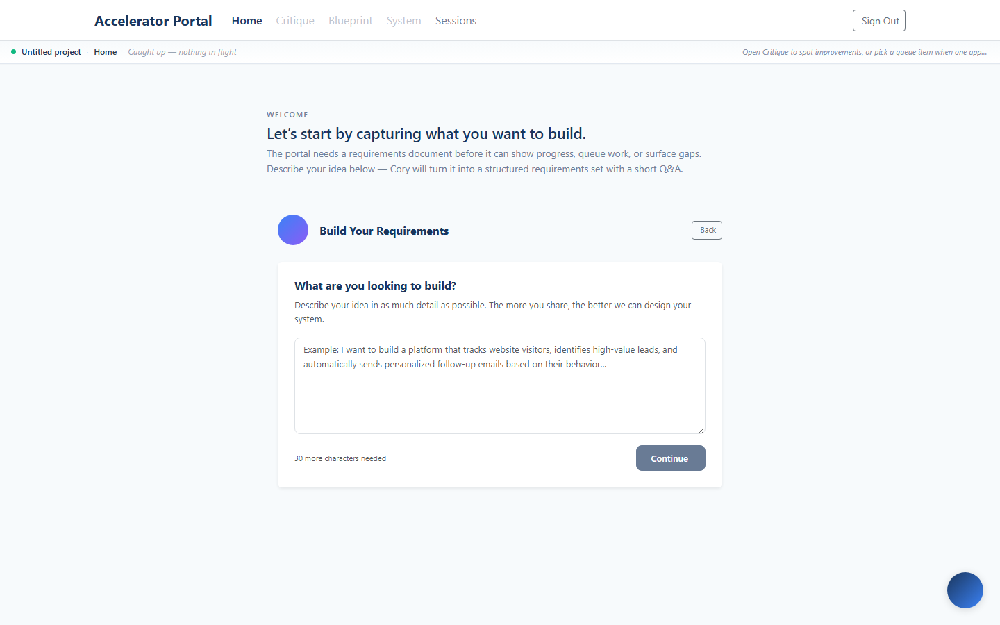
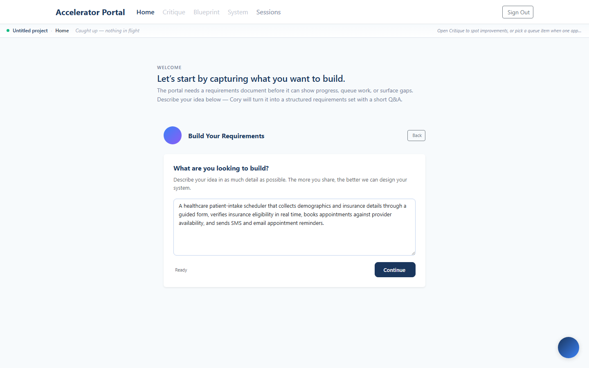
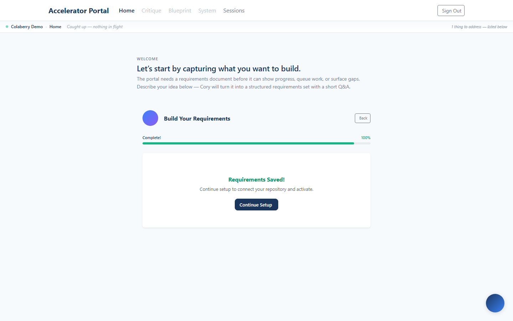

Provision/reset 3 demo enrollments (in prod backend container):
ssh root@95.216.199.47 'docker exec -i -w /app -e RESET=1 accelerator-backend node' < backend/src/scripts/provisionDemoOnboardingRuns.js
Drive all three:node scripts/driveRequirementsBuilder.js · rebuild this report: node scripts/buildOnboardingRunReport.js